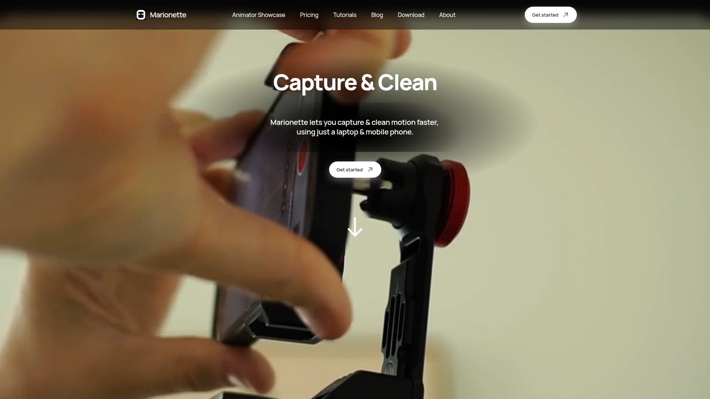

調研日期：2026-06-19
官網：https://marionettemocap.com
定價：$12.50/月起（無限渲染）
插件：Blender / Unity / Maya
Marionette Mocap 是一款本地端 AI 動作捕捉工具，支援全身、臉部和手部追蹤。核心差異化：本地處理（隱私+離線）+ 無限渲染（不按秒計費）+ DCC 插件即時串流。
核心能力一句話：從影片/webcam 提取身體+臉+手動畫 → 本地無限處理 → 即時串流到 Blender/Unity/Maya。
解決的問題：
| 功能 | 支援 | 說明 |
|---|---|---|
| 全身動捕 | ✅ | 影片或 webcam |
| 臉部追蹤 | ✅ | 含表情 |
| 手部追蹤 | ✅ | 手指 |
| 本地處理 | ✅ | 100% 離線 |
| 無限渲染 | ✅ | 不限秒數 |
| Blender 插件 | ✅ | 即時串流到 Control Rig |
| Unity 插件 | ✅ | 即時預覽 |
| Maya 插件 | ✅ | 即時串流 |
| FBX 匯出 | ✅ | Mixamo 標準 |
| 智慧清理 | ✅ | 自動修正動畫品質 |
| Retargeting | ✅ | 內建 |
| 項目 | 規格 |
|---|---|
| 輸入 | 影片檔案 / Webcam / 手機鏡頭 |
| 追蹤點 | 身體+臉+手（具體點數未公開） |
| 匯出格式 | FBX（Mixamo 標準） |
| 處理位置 | 100% 本地（GPU 加速） |
| DCC 串流 | Blender / Unity / Maya |
| 平台 | Windows / macOS（推測） |
| 計費 | 無限使用，不按秒計費 |
| 資源 | 連結 |
|---|---|
| 官網 | https://marionettemocap.com |
| 開始使用 | https://marionettemocap.com/get-started |
| Blender 插件說明 | https://marionettemocap.com/blog/marionette-mocap-free-motion-capture-plugin-for-blender |
| Unity 插件說明 | https://marionettemocap.com/blog/marionette-mocap-free-motion-capture-plugin-for-unity |
| Maya 插件說明 | https://marionettemocap.com/blog/marionette-mocap-free-motion-capture-plugin-for-maya-3d-animation-software |
| 工具比較 | https://marionettemocap.com/blog/compare-marionette-to-other-motion-capture-tools |
| vs Move.AI | https://marionettemocap.com/motion-capture-comparison-marionette-vs-move.ai |
| vs QuickMagic | https://marionettemocap.com/motion-capture-comparison-marionette-vs-quickmagic |
| 方案 | 費用 | 內容 |
|---|---|---|
| **Free Trial** | $0 | 全功能，限 3 秒匯出 |
| **月付** | $12.50/月 | 無限渲染、全功能 |
| **年付** | 推測更低 | — |
| 工具 | 100 個 10 秒動畫成本 |
|---|---|
| Move.AI | $12-$24（API 按秒） |
| Viggle | ~$3（$0.03/clip） |
| Marionette | $12.50/月（無限） |
| DeepMotion | $9-39/月（按 credit） |
| 面向 | 評估 |
|---|---|
| **格式** | Kimodo=BVH，Marionette=FBX(Mixamo) — 需在 Blender 轉換但 Mixamo 標準很好處理 |
| **互補場景** | Kimodo=text-to-motion；Marionette=video-to-motion(含臉手) |
| **量產化** | Marionette 無限但手動；Kimodo 離線可腳本化 |
| **臉/手** | Marionette 補充 Kimodo 沒有的臉部和手指 |
| **成本** | 兩者都極低（$12.50/月 vs Kimodo 本地免費） |
方案：混合工作流
全身表演動作 → Marionette (含臉+手) → FBX → Blender retarget
文字描述動作 → Kimodo → BVH → Blender retarget
統一在 Blender 合併 → 匯出到遊戲引擎
┌─────────────────────────────────────────────────────────┐
│ Marionette 在量產工作流中的定位 │
├─────────────────────────────────────────────────────────┤
│ │
│ 定位：「無限本地端全能動捕」 │
│ │
│ 最適合場景： │
│ • 需要大量影片轉動捕但預算有限 │
│ • 隱私敏感項目（不能雲端） │
│ • 需要臉部+手指精細動捕 │
│ • 團隊有 Blender/Unity 工作流 │
│ │
│ vs 其他工具： │
│ • vs Viggle：Viggle 有 API 自動化，Marionette 無限手動 │
│ • vs DeepMotion：功能類似但 Marionette 無限+離線 │
│ • vs Plask：Plask 按時間計費，Marionette 無限 │
│ │
└─────────────────────────────────────────────────────────┘
| 項目 | 評分 (1-5) |
|---|---|
| 與我們目標的相關性 | ⭐⭐⭐⭐ |
| 技術成熟度 | ⭐⭐⭐ |
| 易用性 | ⭐⭐⭐⭐ |
| 性價比 | ⭐⭐⭐⭐⭐ |
| Pipeline 整合潛力 | ⭐⭐⭐⭐ |
| 量產化適合度 | ⭐⭐⭐⭐ |
推薦等級：🟡 值得評測 — 無限使用+本地+臉手全能，$12.50/月極具性價比。缺 API 是唯一遺憾。
MotionLab Research · 2026-06-19